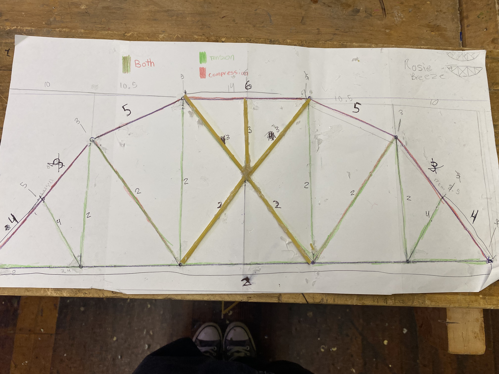
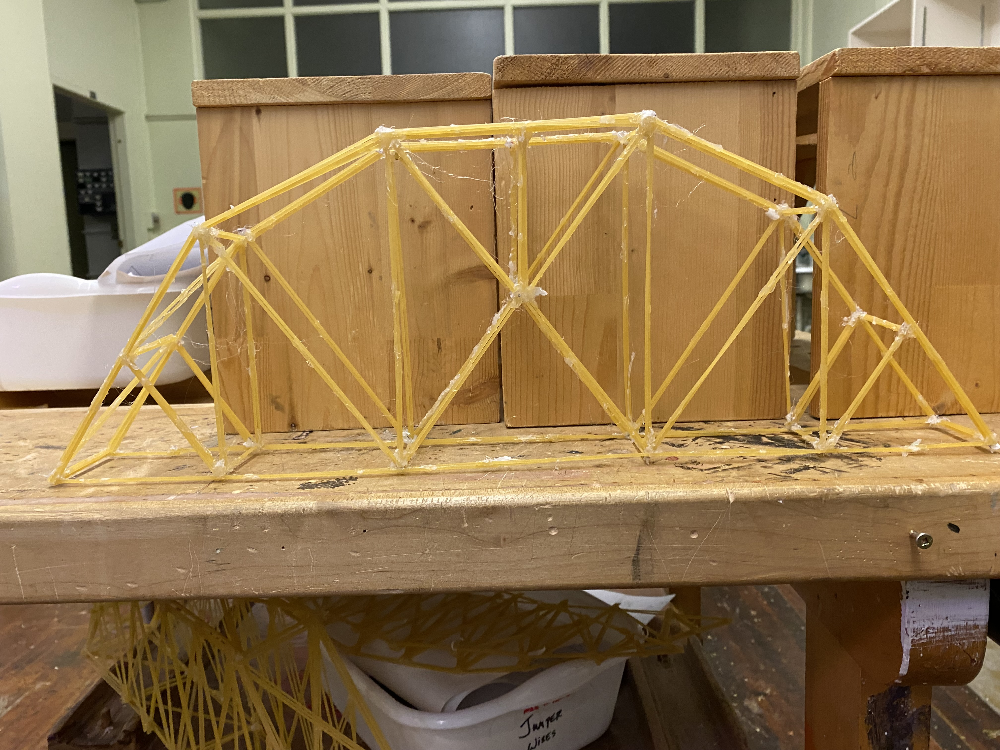

bridge 3
for bridge 3, we did the same design as bridge 2 since it did very well. however this time we made the peaces under compression thicker, and the ones that are under tension are smaller bundles to make it lighter. we will also add more beams to hold up the top so it doesnt collaps like last time.
this is our sketch

this is what our bridge currently looks like, however it is still being worked on.
